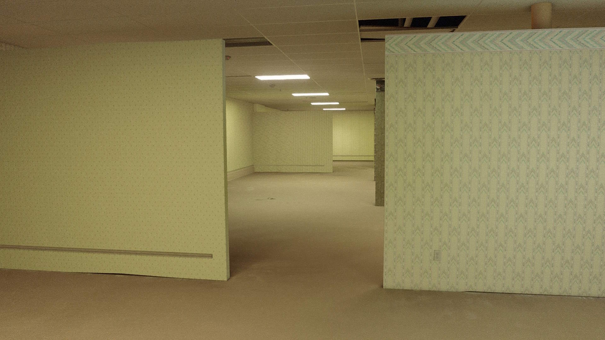

sdz
17 y.o Cgi environment artist
projects
Hallways Of Despair
my addons
gallery
my digicams example footages
my noise overlays
about me
17 y.o Cgi environment artist
Hallways Of Despair
my addons
gallery
my digicams example footages
my noise overlays
about me
What is a Hallways of despair?
Hallways of despair is a 2 hour long backrooms movie ive been working since the end of may 2024. Currently its 20% done and has the teaser-trailer released

watch trailer on ytHi, I am sdz, a 17-year-old CGI environment artist focusing on photorealistic environments and Liminal Spaces / Backrooms aesthetics.
I create 3D scenes, develop custom tools for Blender, and experiment with old digicam footage styles to achieve a vintage VHS look.